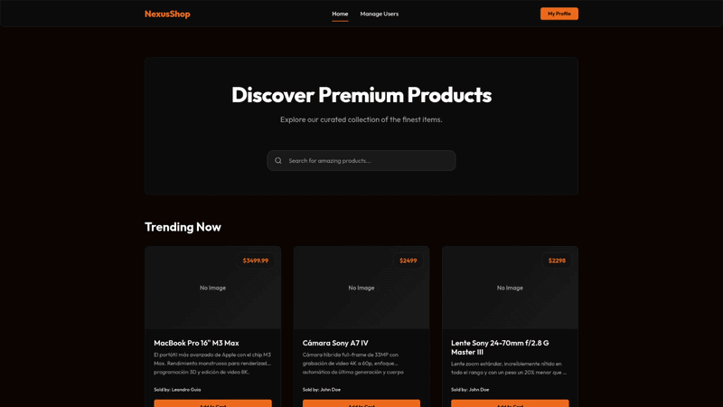

NexusShop
Código abierto
Ecommerce REST API.
API REST desarrollada con Java y Spring Boot. Imita una plataforma de ecommerce con CRUD completo para productos, búsqueda y autenticación. Utiliza Hibernate junto con PostgreSQL para persistencia, Spring Security para acceso por roles y autenticación mediante JWT.